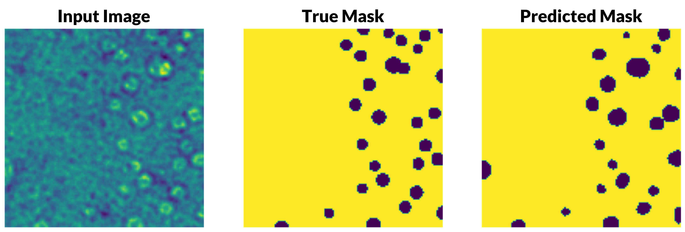

findTDE
Calculate threshold displacement energies using ab initio and classical molecular dynamics.
Learn more GitHubPrevious research projects at The Pennsylvania State University, DEVCOM Army Research Laboratory, Los Alamos National Laboratory, and Rensselaer Polytechnic Institute.
I participate in this project as my graduate research at The Pennsylvania State University under Dr. Miaomiao Jin and Dr. Blair Tuttle. My work supports the defect formation and evolution & defect structure and transport thrusts via simulation and theory. The wide-bandgap semiconductors gallium nitride (GaN), aluminum nitride (AlN), and their alloys (AlGaN) are being studied as radiation-hard alternatives for spacecraft devices and other high-radiation applications. In particular, my research focuses on displacement damage due to non-ionizing energy loss processes. I perform simulations using PSU's Roar Collab and the DoD HPCMP high-performance computing clusters.
Threshold displacement energies (TDE) describe the minimum amount of energy needed to displace an atom from its lattice site and form a permanent defect. The value is anisotropic, and the overall minimum values for each atom type indicate how radiation resistant a material may be. I created the findTDE software package using Bash and Python to calculate TDE values from high-throughput ab initio and classical molecular dynamics simulations.
As the defects are generated, new energy levels are introduced into the band gap that can act as trap/recombination sites for charge carriers responsible for current transport. This reduction in carrier density and mobility degrades device performance. A primary mode of carrier capture change the charge state of the defect through nonradiative multiphonon emission. I have performed first principles calculations to determine carrier capture coefficients for all native defects, a gallium/nitrogen divacancy, and a carbon substitutional impurity on a nitrogen site.
I participated in the DoD High-Performance Computing Modernization Program (HPCMP) internship through ORISE, working in the Ceramics and Transparent Materials Branch of DEVCOM Army Research Laboratory. Silicon carbide (SiC) is a wide-bandgap semiconductor with a variety of desirable properties leading to its widespread applications across industries like nuclear power, electronic devices, and armor. Grain boundaries influence the material properties important to these uses, magnified further within extreme environments.
Modeling techniques of grain boundary structures have been well explored but are often limited to atomistic techniques such as molecular dynamics. To improve understanding of material behavior, microscale information was used to create macroscale representations of the grain boundaries. I enabled their use in higher-scale kinetic Monte Carlo modeling to support processing studies via Potts Monte Carlo grain growth with increased accuracy compared to the currently used Read–Shockley model. I automated creation of decision tree-based regression models, trained using a dataset of 332 [100], [110], and [111] tilt and twist grain boundaries generated in β-SiC and tuned to achieve mean absolute percentage errors below 10.0 % with reasonably high coefficients of determination. I produced a script to transform the models from Python to ONNX to enable their use in C++ SPPARKS simulations.
Between graduating from RPI and starting my Ph.D. at PSU, I joined the NEN-2 (Advanced Nuclear Technology) group at Los Alamos National Laboratory as a Graduate Research Intern. In support of nuclear criticality safety efforts, criticality experiments and MCNP modeling are performed for nuclear cross-section benchmarking.
I generated high-fidelity models of the Flattop critical assembly using Python for MCNP. The Python script served as a framework with classes for each type of assembly component. This enabled quick and frequent changes to piece dimensions as new, detailed measurements were being taken simultaneously. Additionally, small pieces exist that may be added to the assembly to change critical configurations, and the specific configuration can be specified in Python to create the corresponding configuration. Finally, this framework was to be used for adjusting part parameters for uncertainty and sensitivity quantification.
I developed modules for the Department of Materials Science & Engineering to be used in RPI's 2022 PREFACE program. This outreach program introduced materials science and engineering to 40 high school students across the globe across twelve days. Nine total hands-on activities, demonstrations, and lectures were created, two of which I worked on: 1. Materials processing and diffusion using Python based random walk simulators and measurements of dye diffusion through agar gels and 2. Kinetics and mechanical properties of edible alginate gels.
I programmed an interactive worksheet in Google Colaboratory to support an experiment demonstrating diffusion with analysis and simulations. I also made dozens of agar plates, wrapped with parafilm, and packaged with other necessary experiment materials to be shipped to the students. To support the alginate gel experiments, I created hundreds of solutions in screw cap vials to be sent to the students.
As a Westinghouse Undergraduate Research Fellow, I researched under Dr. Xing Wang with another fellow, Quinton Williams. I also developed communication and professional skills with Dr. Peter Miraldi and all 7 other fellows.
Quinton and I developed a machine learning program using TensorFlow in Python to automatically characterize helium bubbles in transmission electron microscope (TEM) images of irradiated nickel alloys. We used a UNet model for semantic image segmentation with a dataset of ten TEM images and their corresponding masks. We were able to reach over 98% accuracy with our model, with room for even more improvement, which we were beginning to explore.
I create software and packages for radiation damage and semiconductor research, focusing on electronic and atomic scale techniques such as density-functional theory and molecular dynamics. I'm looking to support the research of others in the community by publishing these codes open-source. Primarily, I work with Python, Julia, and Bash, but I also have some experience with C++. Please reach out with any comments, questions, or suggestions for the listed projects.
Calculate threshold displacement energies using ab initio and classical molecular dynamics.
Learn more GitHubAnalyze properties of radiation-induced defects from first principles.
Learn more GitHub